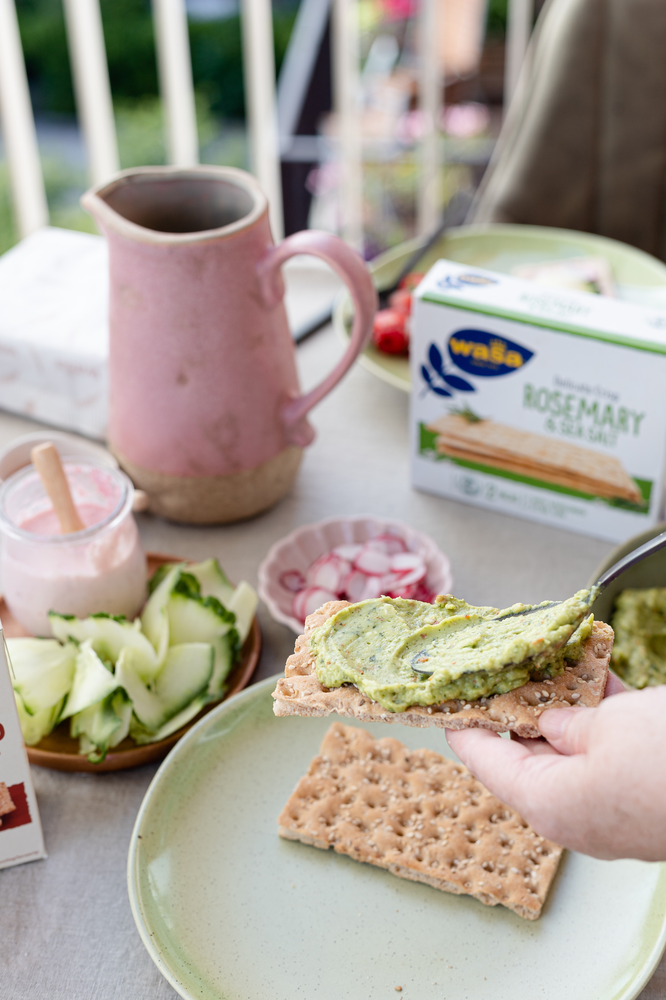
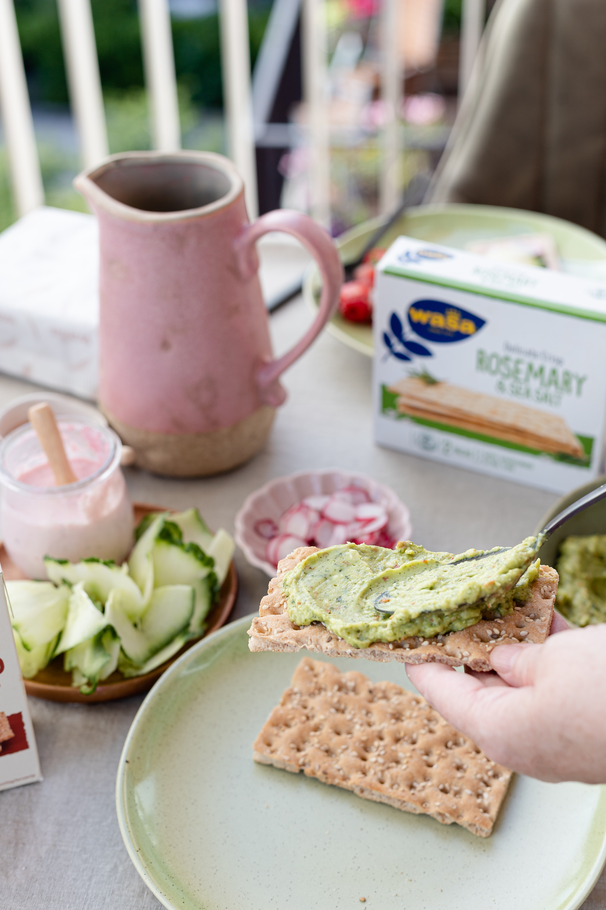

Acerca de Nosotros
1 Ejercitación: Caminata
La actividad física no tiene que ser complicada. Algo tan sencillo como un paseo diario a paso ligero puede ayudarte a llevar una vida más saludable. Por ejemplo, caminar a paso ligero con regularidad puede ayudarte a mantener un peso saludable y perder grasa corporal.Prevenir o controlar diversas afecciones, como las enfermedades cardíacas, los accidentes cerebrovasculares, la hipertensión arterial, el cáncer y la diabetes tipo 2. Mejorar el estado cardiovascular, fortalecer los huesos y los músculos, mejorar la resistencia muscular. Aumentar los niveles de energía, mejorar el estado de ánimo, la cognición, la memoria y el sueño. Mejorar el equilibrio y la coordinación, fortalecer el sistema inmunitario, reducir el estrés y la tensión. Cuanto más rápido, más lejos y con más frecuencia camines, mayores serán los beneficios.
2 Ejercitación: Sentadillas.
Un ejercicio de los más completos en cuanto a músculos involucrados. Fortalecen las piernas, los ligamentos y las nalgas. Al mismo tiempo la espalda, los hombros y los brazos se benefician, ya que están implicados de forma indirecta en este ejercicio. Haremos 2 series, de 25 sentadillas cada una. Recuerda respirar hondo y adoptar una buena posición. Tener una buena postura es importante para evitar provocarnos alguna lesión: cuando bajes, mantén la espalda recta y carga el peso en las piernas; no cargues el peso en la zona lumbar y tampoco te apoyes en una pared: carga el peso en piernas y glúteos mientras levantas los brazos a la altura del pecho. De esta forma la postura estará equilibrada, y el esfuerzo corporal también.
3 Ejercitación: Lunges.
Las zancadas (o lunges) son uno de los ejercicios más populares. Consiste en adelantar una pierna, agachamos mientras la flexionamos y apoyar la rodilla de la otra pierna en el suelo. Nos levantamos y repetimos adelantando la otra pierna. Esta rutina es ideal para trabajar las piernas y las articulaciones de las rodillas. Pon cuidado de no ir demasiado deprisa y hacerte daño en una rodilla; mantén el gesto recto y no des saltos. Haz este ejercicio alternando una pierna y la otra, creando un ángulo de 90 grados con la pierna flexionada. Se puede acompañar esta rutina con pesas; en tal caso sostendremos las pesas en alto sobre nuestra cabeza, con los brazos estirados: de esta forma el peso y la fuerza estarán equilibrados en nuestro cuerpo.
Galeria


 



Consejos
Es importante tener un conocimiento real de en qué situación te encuentras actualmente en términos desalud y estado físico». «Mientras que muchos propósitos tienen que ver con hacer un cambio positivo en relación a la salud, muchas veces se establecen metas sin tener demasiado en cuenta desde dónde se está partiendo. Ser honesto contigo mismo y reconocer cuál es tu realidad actual respecto al fitness te permitirá establecer metas realistas y alcanzables, según Matthews.
Entrenamiento
Descanso